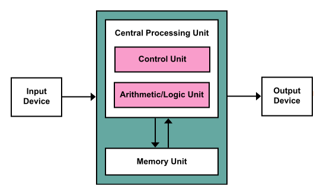
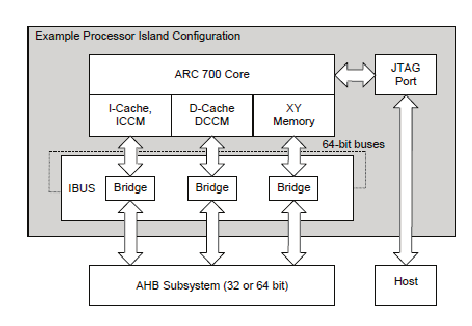
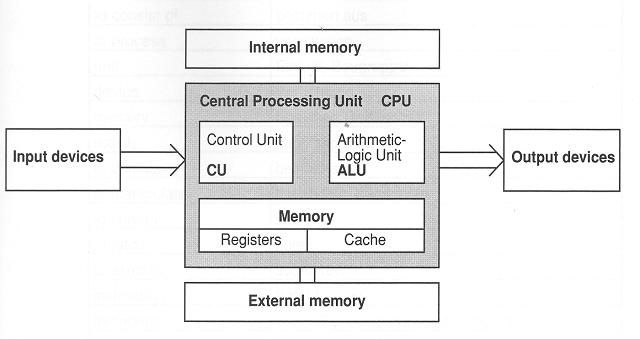
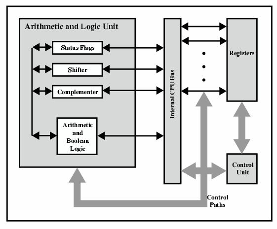
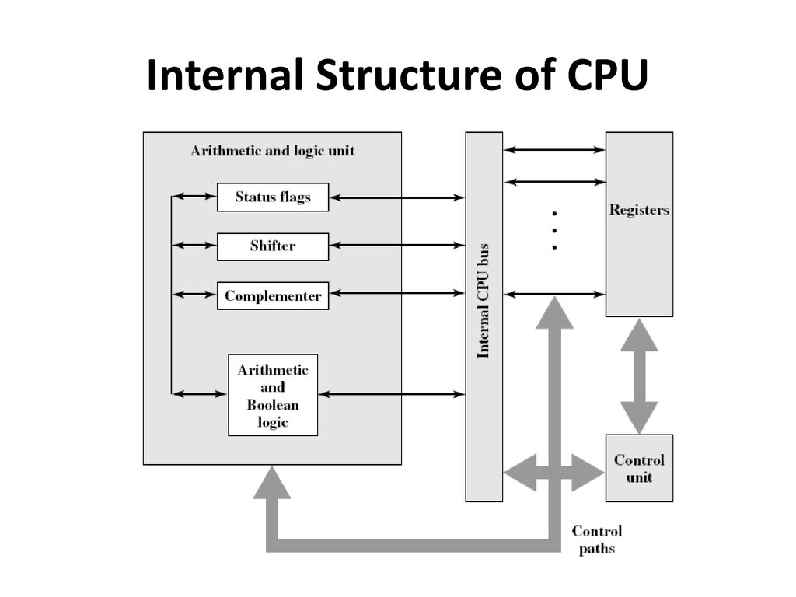

Hardvertár
Processzorok, Grafikus kártyák, egyéb.
Fooldal
A CPUk-ról
Generációk
Fejlodésük
Architektúrák
Kapcsolat
Hírek
Sok részlet kiderült az Intel Comet Lake-S processzorok specifikációiról
Januar 2, 2020
Furcsa mérkozések jönnek az Intel és az AMD frontján
December 29, 2019
Bizonyos elso generációs Ryzenek már második generációs lapkával érkeznek
December 27, 2019
Az LGA1200 kompatibilis lesz elodeinek hutésével
December 26, 2019
Sokáig marad a Cascade Lake-X generáció az Intel HEDT kínálatában
December 19, 2019
Bemutatta legújabb DRIVE platformját az NVIDIA
December 18, 2019
Jövore megpörgeti a mobil fejlesztéseket az AMD
December 13, 2019
Hasznos linkek
Intel
AMD
Snapdragon
Processzor architektúrák
    